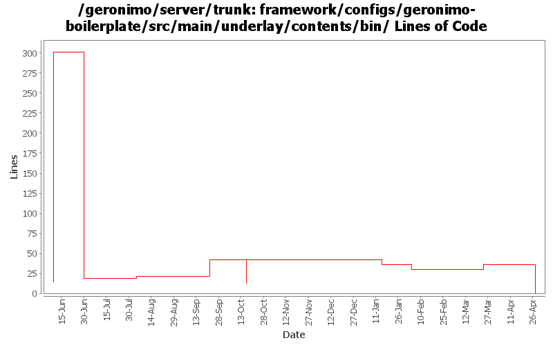

[root]/framework/configs/geronimo-boilerplate/src/main/underlay/contents/bin

| Author | Changes | Lines of Code | Lines per Change |
|---|---|---|---|
| Totals | 49 (100.0%) | 360 (100.0%) | 7.3 |
| xuhaihong | 8 (16.3%) | 327 (90.8%) | 40.8 |
| djencks | 4 (8.2%) | 29 (8.1%) | 7.2 |
| xiaming | 3 (6.1%) | 3 (0.8%) | 1.0 |
| caijunj | 18 (36.7%) | 1 (0.3%) | 0.0 |
| kevan | 4 (8.2%) | 0 (0.0%) | 0.0 |
| gawor | 12 (24.5%) | 0 (0.0%) | 0.0 |
not used anymore
0 lines of code changed in 12 files:
GERINOMO-5159 add %% to windows environment variables
1 lines of code changed in 1 file:
GERONIMO-5159 add /d'startupPath' to avoid file-not-found error when launching startup.bat/geronimo.bat not in the bin directory
1 lines of code changed in 1 file:
For 2.2 branch, A fix based on Kees van Veen's patch to make it compatible on AIX
1 lines of code changed in 1 file:
GERONIMO-5147 deploy.sh exits with non-zero status because of stty echo (Patch from Kees van Veen)
8 lines of code changed in 1 file:
GERONIMO-5159 - Add pause when startup.bat fails on Windows
1 lines of code changed in 2 files:
GERONIMO-4968 - Problemastic OS check in Windows startup command: clean up more OS check
0 lines of code changed in 1 file:
GERONIMO-4968 - Problemastic OS check in Windows startup command
0 lines of code changed in 15 files:
GERONIMO-4885 Merge from branches/2.2 to trunk. Update default max heap and max permgen settings. Make gsh and geronimo scripts default to the same settings. Thanks to Quintin Beukes for orignal patch
0 lines of code changed in 4 files:
GERONIMO-4916 step 2 move sandbox osgi framework into trunk
29 lines of code changed in 2 files:
GERONIMO-4916 step 1 remove old framwork
0 lines of code changed in 2 files:
GERONIMO-4825 can not config geronimo as a service in ubuntu (Patch from viola.lu)
28 lines of code changed in 1 file:
GERONIMO-4813 exceptions occur when running geronimo as a service on AIX (Patch from Viola.lu)
1 lines of code changed in 1 file:
GERONIMO-4622 Contribution: Linux service script for Geronimo/WAS CE (Patch from viola.lu)
3 lines of code changed in 1 file:
GERONIMO-4589 Does not echo the command after expection occur in command line deploy.sh (Patch from Han Hong Fang)
0 lines of code changed in 2 files:
Fix the double scripts in the file
0 lines of code changed in 1 file:
GERONIMO-4622 Contribution: Linux service script for Geronimo/WAS CE (Patch from viola.lu)
287 lines of code changed in 1 file: